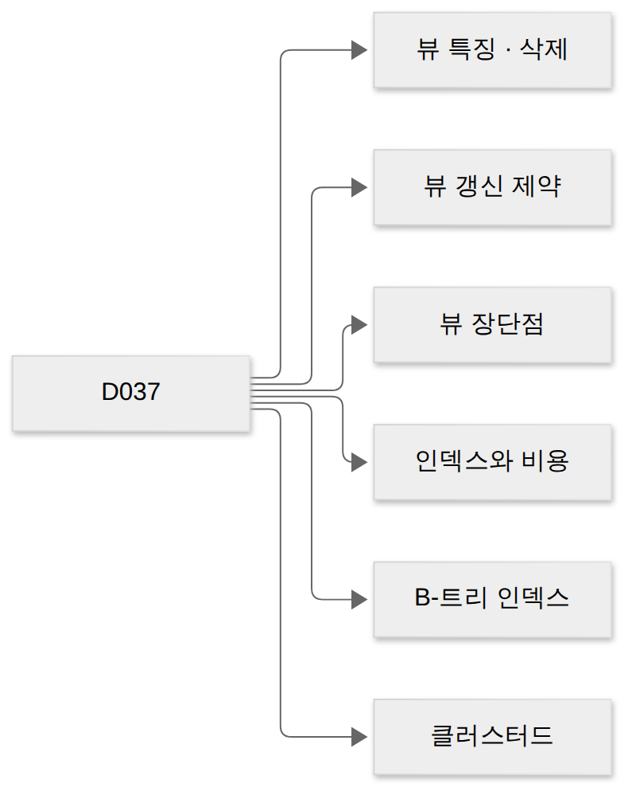
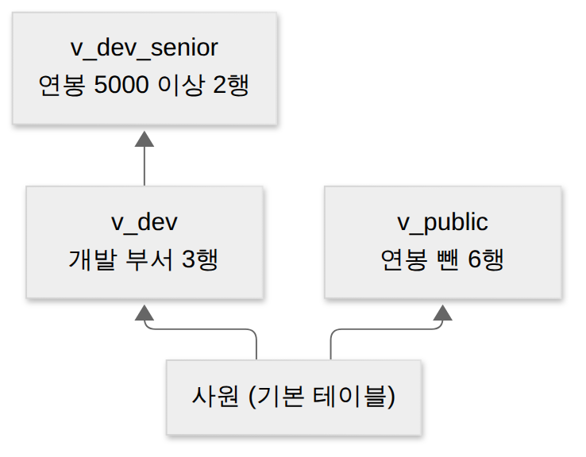
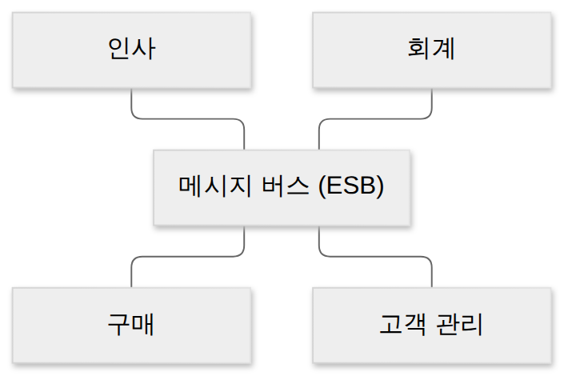

D037 · 뷰(View)와 인덱스 — 가상 테이블, B-트리, 클러스터드·넌클러스터드
B2 지난 D036에서 서브쿼리를 FROM 절에 넣으면 이름 없는 일회용 표(인라인 뷰)가 된다고 했어요. 오늘은 그 질의에 이름을 붙여 두고 표처럼 쓰는 뷰, 그리고 큰 표에서 원하는 행을 빨리 찾게 해 주는 인덱스를 봐요. 둘 다 표 본체는 건드리지 않고 그 옆에 만드는 객체예요. 예시는 가상의 스타트업 ‘모닥불’의 사원 표 하나로 끝까지 가요.
- 뷰가 물리 저장이 없는 가상 테이블이라는 뜻을 설명하고, “물리적으로 존재한다” · “자체 인덱스를 가진다”가 왜 틀린지 구별할 수 있다
- CREATE VIEW · DROP VIEW(CASCADE)와 “정의는 ALTER로 못 바꾼다”, 뷰의 갱신 제약과 장점 · 단점을 짝지어 구별할 수 있다
- 인덱스의 목적과 비용, CREATE INDEX · DROP INDEX, 사용자가 만들고 지울 수 있음을 설명할 수 있다
- B-트리(루트 · 브랜치 · 리프, 범위 검색)와 클러스터드 · 넌클러스터드의 차이를 구별할 수 있다
1부 (약 23분)
2부 (약 20분)
0. 기본 전제와 용어 사전
CREATE TABLE로 만든, 디스크에 행이 실제로 쌓이는 표를 기본 테이블(base table)이라고 불러요. 오늘 나오는 뷰와 인덱스는 혼자서는 존재 이유가 없고 반드시 어떤 기본 테이블을 가리켜요. 그래서 기본 테이블이 사라질 때 이 둘이 어떻게 되는지가 시험의 단골 질문이에요.
| 용어 | 뜻 | 모닥불 예 |
|---|---|---|
| 기본 테이블 | CREATE TABLE로 만든, 행을 실제로 저장하는 표 | 사원 6행 |
| 뷰(View) | SELECT 문에 이름을 붙여 표처럼 쓰는 가상 테이블 | v_dev = 개발 부서 사원 |
| 뷰 정의(정의문) | 뷰를 만들 때 쓴 SELECT 문. DBMS는 이것만 보관 | … WHERE 부서 = '개발' |
| 시스템 카탈로그 | DBMS가 객체 정보를 적어 두는 내부 표(D032) | 뷰 정의 · 인덱스 목록 |
| 인덱스(Index) | 열 값과 행 위치를 정렬해 따로 저장한 검색용 보조 구조 | 부서 인덱스: 영업 → E3, E4 |
| 인덱스 키 | 인덱스를 만든 열(의 값) | 부서 · 연봉 · 사번 |
| 전체 테이블 스캔 | 인덱스 없이 모든 행을 처음부터 끝까지 읽기 | 6행 모두 확인 |
| 의존 객체 | 다른 객체를 재료로 만든 객체 | v_dev_senior는 v_dev에 의존 |
현업에서 매일 쓰는 것들이라 이름은 익숙할 거예요. 다만 시험은 “뷰는 저장되나?”, “인덱스는 누가 만드나?”, “지우면 무엇이 같이 지워지나?”처럼 존재 방식을 집요하게 물어요. 오늘은 그 존재 방식을 하나씩 실제로 실행해 보며 확인해요.
1. 큰 그림 — 보이는 모양을 바꾸는 창, 찾는 속도를 바꾸는 찾아보기
앞 0장에서 둘 다 기본 테이블 위에 얹힌다고 했어요. 모닥불의 사원 표에는 연봉이라는 민감한 열이 있어요. 모든 직원에게 사원 표를 그대로 열면 연봉이 다 보이니, “사번 · 이름 · 부서만 보이는 표”가 필요해요. 이걸 매번 복사해 새 표로 만들면 원본이 바뀔 때마다 복사본도 고쳐야 하죠. 그래서 보여 줄 모양(SELECT)만 저장해 두는 뷰가 생겼어요.
한편 사원이 6천만 명이라면 WHERE 부서 = '영업' 한 줄을 위해 매번 6천만 행을 읽어야 해요. 책에서 단어 하나 찾으려고 처음부터 넘기지 않고 뒤의 찾아보기를 보는 것처럼, 값과 행 위치를 정렬해 둔 것이 인덱스예요. 비유하자면 뷰는 가게 쇼윈도예요. 창고에 물건이 가득해도 손님에게는 진열한 것만 보이죠. 인덱스는 그 창고 입구의 재고 위치 안내판이고요.

아래 그림은 같은 사원 표 위에 두 객체를 하나씩 만든 모습이에요. 가장 큰 차이는 저장하는 데이터가 있느냐예요. 뷰는 정의문 한 줄만 카탈로그에 남기고, 인덱스는 자기만의 저장 공간을 차지해요.
한 장 요약 — 두 객체를 나란히 놓으면 이래요. 각 칸은 이어지는 장면에서 하나씩 실행해 확인해요.
| 구분 | 뷰 | 인덱스 |
|---|---|---|
| 만드는 이유 | 보여 줄 열 · 행 제한, 복잡한 질의를 이름 하나로 | 검색 속도 향상 |
| 데이터 저장 | 없음(정의문만 카탈로그에) | 있음(별도 저장 공간) |
| 만들기 · 지우기 | CREATE VIEW · DROP VIEW | CREATE INDEX · DROP INDEX |
| 바꾸기 | ALTER로 정의 변경 불가 → 지우고 다시 | 보통 지우고 다시 만듦 |
| 대표 오답 | “물리적으로 존재” · “자체 인덱스” | “시스템이 자동 생성, 사용자가 못 바꿈” · “ADD INDEX” |
오늘 사례 표는 아래와 같아요. 연봉 단위는 만 원이고, 사람 이름은 모두 가상이에요.
| 사번 | 이름 | 부서 | 연봉 |
|---|---|---|---|
| E1 | 가람 | 개발 | 4800 |
| E2 | 나래 | 개발 | 5200 |
| E3 | 다솜 | 영업 | 4100 |
| E4 | 라온 | 영업 | 4500 |
| E5 | 마루 | 인사 | 3900 |
| E6 | 바다 | 개발 | 6100 |
v_dev · v_dev_senior · v_dept_sum)가 미리 만들어져 있어요. ▶ 실행 전에 결과를 먼저 예상해 보고, 값을 바꿔 다시 실행해 보세요(Ctrl+Enter). 실행할 때마다 원래 상태로 다시 시작해요.두 번째 상자의 결과를 보면 카탈로그에 남아 있는 것은 SELECT 문장뿐이에요. 연봉 숫자 같은 행 데이터는 어디에도 없어요. 이것이 장면 1의 출발점이에요.
→ 이 장면의 결과물: 뷰 = 저장 없는 창, 인덱스 = 저장된 찾아보기라는 큰 구분. 그래서 다음 장면은 창(뷰)을 직접 만들고 지워 봐요.
2. 장면 1 — 연봉을 가린 창 만들기 (뷰의 특징 · 정의 · 삭제) 기출 20회
정의: 뷰는 SELECT 문에 이름을 붙여 저장한 객체예요. 사용자는 뷰를 표처럼 FROM 절에 쓰지만, DBMS는 그 이름을 만나면 저장해 둔 SELECT로 바꿔 실행해요. 왜 필요한가: 같은 조건 · 같은 조인을 여러 사람이 반복해서 쓰거나, 일부 열 · 행만 보여 줘야 할 때 매번 긴 SQL을 쓰거나 복사 표를 만드는 대신 이름 하나로 해결해요. 언제 쓰나: 권한별로 보이는 범위를 나눌 때, 화면 · 보고서용 질의를 고정할 때예요.
만드는 문법은 CREATE VIEW 뷰이름 [(열이름들)] AS SELECT …예요. AS 뒤에는 평범한 SELECT가 오고, 열 이름을 따로 주지 않으면 SELECT의 열 이름을 그대로 써요. 뷰도 테이블처럼 스키마 안의 객체라, 같은 스키마에 같은 이름의 테이블이 있으면 만들 수 없어요.
CREATE VIEW v_public AS
SELECT 사번, 이름, 부서 FROM 사원; -- 열 제한(연봉 숨김)
CREATE VIEW v_dev AS
SELECT 사번, 이름, 부서, 연봉 FROM 사원
WHERE 부서 = '개발'; -- 행 제한
CREATE VIEW v_dev_senior AS
SELECT 이름, 연봉 FROM v_dev
WHERE 연봉 >= 5000; -- 뷰 위의 뷰v_public은 연봉 열을 빼서 열을 자르고, v_dev는 개발 부서만 남겨 행을 잘라요. 아래 그림처럼 뷰는 같은 표를 어떤 칼로 자를지만 기억하는 셈이에요. 일반 직원에게는 사원 표 대신 v_public에만 조회 권한(GRANT SELECT)을 주면 연봉이 보이지 않아요.
v_public(열 제한), 주황 줄이 v_dev(행 제한)예요. 뷰는 이 표를 어떻게 잘라 볼지만 기억해요.뷰 위의 뷰
뷰의 FROM 절에는 기본 테이블뿐 아니라 다른 뷰도 올 수 있어요. v_dev_senior는 v_dev에서 연봉 5000 이상만 다시 고른 뷰예요. 이렇게 쌓으면 “개발 부서”라는 조건을 한곳(v_dev)에서만 관리할 수 있어요. 대신 아래 뷰가 위 뷰의 재료가 되는 의존 관계가 생기고, 이것이 뒤에서 볼 DROP의 결과를 바꿔요.

v_dev_senior는 표가 아니라 뷰 v_dev를 재료로 쓴 뷰 위의 뷰예요.뷰를 조회하면 무슨 일이 일어날까요? DBMS는 뷰 이름을 정의문으로 바꿔 쓰고, 그 안에 또 뷰가 있으면 한 번 더 펼쳐요. 결국 기본 테이블에 조건 두 개를 건 질의가 되고, 그 결과를 돌려준 뒤 어디에도 저장하지 않아요. 아래 애니메이션으로 이 과정을 한 단계씩 따라가 보세요.
| 사번 | 이름 | 부서 | 연봉 |
|---|---|---|---|
| E1 | 가람 | 개발 | 4800 |
| E2 | 나래 | 개발 | 5200 |
| E3 | 다솜 | 영업 | 4100 |
| E4 | 라온 | 영업 | 4500 |
| E5 | 마루 | 인사 | 3900 |
| E6 | 바다 | 개발 | 6100 |
SELECT * FROM v_dev_senior;
① 요청이 들어와요. DBMS가 가진 건 사원 표 6행과 뷰의 정의문뿐이에요.
| 사번 | 이름 | 부서 | 연봉 |
|---|---|---|---|
| E1 | 가람 | 개발 | 4800 |
| E2 | 나래 | 개발 | 5200 |
| E3 | 다솜 | 영업 | 4100 |
| E4 | 라온 | 영업 | 4500 |
| E5 | 마루 | 인사 | 3900 |
| E6 | 바다 | 개발 | 6100 |
② v_dev_senior는 v_dev를 재료로 하니, 먼저 v_dev 정의(부서 = '개발')를 적용해요 → 3행.
| 사번 | 이름 | 부서 | 연봉 |
|---|---|---|---|
| E1 | 가람 | 개발 | 4800 |
| E2 | 나래 | 개발 | 5200 |
| E3 | 다솜 | 영업 | 4100 |
| E4 | 라온 | 영업 | 4500 |
| E5 | 마루 | 인사 | 3900 |
| E6 | 바다 | 개발 | 6100 |
③ 이어서 v_dev_senior 정의(연봉 ≥ 5000)를 적용 → 나래 · 바다 2행. 결과를 돌려주고 나면 어디에도 남기지 않아요.
| 사번 | 이름 | 부서 | 연봉 |
|---|---|---|---|
| E1 | 가람 | 개발 | 5000 |
| E2 | 나래 | 개발 | 5200 |
| E3 | 다솜 | 영업 | 4100 |
| E4 | 라온 | 영업 | 4500 |
| E5 | 마루 | 인사 | 3900 |
| E6 | 바다 | 개발 | 6100 |
④ 누군가 UPDATE 사원 SET 연봉 = 5000 WHERE 이름 = '가람'을 실행했어요. 뷰는 손대지 않았어요.
| 사번 | 이름 | 부서 | 연봉 |
|---|---|---|---|
| E1 | 가람 | 개발 | 5000 |
| E2 | 나래 | 개발 | 5200 |
| E3 | 다솜 | 영업 | 4100 |
| E4 | 라온 | 영업 | 4500 |
| E5 | 마루 | 인사 | 3900 |
| E6 | 바다 | 개발 | 6100 |
⑤ 같은 요청을 다시 하면 ②·③을 처음부터 다시 계산 → 가람 · 나래 · 바다 3행. 저장본이 없으니 “새로 고침”도 필요 없어요.
그래서 뷰는 사진이 아니라 생중계 화면이에요. 창고(기본 테이블)에서 물건이 빠지면 화면에서도 바로 사라져요. 아래 상자에서 기본 테이블만 고친 뒤 뷰를 다시 조회해 보세요.
뷰 지우기 — DROP VIEW와 CASCADE · RESTRICT
뷰의 정의 · 삭제 문법은 짝으로 기억해요. 만들 때 CREATE VIEW, 지울 때 DROP VIEW예요. 정의: DROP VIEW 뷰이름 [CASCADE | RESTRICT]는 뷰 정의를 카탈로그에서 지워요. 뷰를 지워도 기본 테이블의 데이터는 그대로예요. 지워지는 건 “보는 방법”뿐이니까요. 문제는 그 뷰를 재료로 쓰는 다른 뷰가 있을 때예요.
RESTRICT는 기대고 있는 객체가 있으면 삭제를 거부하고(PostgreSQL 등 대부분 기본값), CASCADE는 기댄 객체까지 연쇄로 함께 삭제해요. D036 참조 동작의 ON DELETE CASCADE는 행을 연쇄 삭제했지만, DROP … CASCADE는 객체를 연쇄 삭제한다는 점이 달라요.
v_dev_senior가 기대고 있어 거부돼요. 오른쪽 CASCADE는 기댄 뷰까지 함께 지우고, 기본 테이블은 건드리지 않아요.정의를 바꾸고 싶다면 — ALTER가 아니라 지우고 다시
테이블은 ALTER TABLE로 열을 더하고 바꾸지만, 뷰의 SELECT 정의는 ALTER로 바꿀 수 없다는 것이 시험의 정답이에요. 정의를 바꾸려면 DROP VIEW 후 CREATE VIEW로 새로 만들어요. 쇼윈도 진열을 바꾸려면 유리창을 고치는 게 아니라 진열을 새로 하는 것과 같아요. 출제자는 “뷰도 테이블처럼 ALTER로 고치면 되지?” 하고 슬쩍 묻는데, 여기서 넘어가면 안 돼요.
CREATE OR REPLACE VIEW는 지우고 만드는 일을 한 문장으로 해 줘요. ALTER VIEW는 이름 · 소유자 같은 속성만 바꿔요.기본 테이블이 사라지면 뷰는?
뷰는 기본 테이블 없이는 계산할 재료가 없어요. 그래서 시험은 “기본 테이블이 제거되면 그 위에 정의된 뷰도 자동으로 제거된다”를 옳은 설명으로 둬요. 실제 DBMS의 동작은 조금씩 달라서, PostgreSQL은 뷰가 기대고 있으면 표 삭제를 거부하고 CASCADE를 줘야 뷰까지 함께 지워요.
→ 이 장면의 결과물: 뷰를 만들고, 쌓고, 지우는 방법과 “저장 없음”의 결과들. 그런데 창으로 보기만 할 수 있을까요? 다음 장면은 뷰를 통해 데이터를 고칠 수 있는지 봐요.
3. 장면 2 — 창문으로 손을 넣을 수 있나 (뷰의 갱신 제약)
앞 장면에서 뷰는 저장본 없이 기본 테이블을 비춘다고 했어요. 그러니 뷰에 UPDATE를 하면 DBMS는 그 요청을 기본 테이블에 대한 UPDATE로 번역해야 해요. 정의: 이렇게 번역이 가능해 데이터 변경을 받아 주는 뷰를 갱신 가능한 뷰라고 해요. 왜 제약이 생기나: 번역이 모호한 뷰가 있기 때문이에요. 시험이 “뷰는 삽입 · 갱신 · 삭제에 제약이 따른다”를 옳은 설명으로 두는 이유예요.
v_dev는 사원 표 하나에서 행만 고른 뷰라, 뷰의 한 줄이 사원 표의 한 줄과 1:1로 맞아요. 이런 뷰는 갱신할 수 있어요. 반면 v_dept_sum처럼 부서별 합계를 낸 뷰의 ‘개발 16100’ 한 줄은 사원 세 명의 연봉이 섞인 값이에요. 이 합계를 0으로 바꾸라는 건 다 구운 케이크에서 달걀만 다시 빼내라는 요구와 같아요. 어느 달걀인지 알 길이 없어요.
한 장 요약 — 뷰 모양별로 갱신 가능 여부를 정리하면 이래요. 실제 규칙은 DBMS마다 조금씩 다르지만, “기본 테이블의 한 행을 짚을 수 있나”라는 기준은 같아요.
| 뷰 모양 | 갱신 | 이유 |
|---|---|---|
| 표 하나 + WHERE로 행 고르기 (v_dev) | 가능 | 뷰 한 행 = 기본 테이블 한 행 |
| GROUP BY · 집계 함수 (v_dept_sum) | 불가 | 한 행이 여러 행의 요약 |
| DISTINCT | 불가 | 같은 값 여러 행 중 어느 것인지 모름 |
| 여러 표 조인 | 제약 | 어느 표를 고칠지 모호 |
| 계산 열 (연봉 * 1.1 등) | 그 열 불가 | 계산 결과를 거꾸로 풀 수 없음 |
뷰에 없는 열도 문제예요. 예를 들어 이름 열을 뺀 뷰에 INSERT하면 기본 테이블의 이름은 값이 없게 되는데, 사원.이름은 NOT NULL이라 거부돼요. 뷰를 통해 넣는 행도 결국 기본 테이블의 모든 제약을 통과해야 해요.
WITH CHECK OPTION — 창 밖의 행은 들여보내지 않기
갱신 가능한 뷰에는 또 하나의 구멍이 있어요. v_dev(개발 부서만)에 영업 사원을 INSERT하면 어떻게 될까요? 표 하나짜리 뷰라 번역은 되니까 사원 표에 들어가요. 그런데 v_dev 조건(부서 = 개발)에 맞지 않으니 방금 넣은 행이 뷰에서는 안 보여요. 넣은 사람 입장에선 귀신이 곡할 노릇이죠.
정의: WITH CHECK OPTION은 뷰를 통한 INSERT · UPDATE가 뷰의 WHERE 조건을 벗어나는 행을 만들면 거부하게 하는 옵션이에요. 쇼윈도 앞 경비원이 “이 진열대에 안 맞는 물건은 들일 수 없습니다” 하고 막는 셈이에요.
→ 이 장면의 결과물: 뷰는 보기엔 자유롭지만 고치기엔 제약이 있다는 것. 이제 지금까지 본 성질들을 장점과 단점으로 묶어 정리할 차례예요.
4. 장면 3 — 왜 쓰고 무엇을 감수하나 (뷰의 장점 · 단점) 기출 11회
앞 두 장면에서 뷰를 만들고, 쌓고, 고쳐 봤어요. 그 과정에서 본 성질이 그대로 뷰의 장단점이 돼요. 하나씩 사례로 이어 볼게요.
논리적 독립성은 기본 테이블 구조가 바뀌어도 응용 프로그램은 그대로 둘 수 있다는 뜻이에요. 모닥불이 사원 표를 ‘사원기본’과 ‘사원급여’ 두 표로 나눠도, v_dev를 두 표의 조인으로 다시 정의하면 v_dev를 조회하던 프로그램은 한 줄도 고칠 필요가 없어요. 응용과 저장 구조 사이에 뷰가 완충재로 끼는 셈이에요.
보안은 보여 줄 열과 행을 뷰로 제한하고 그 뷰에만 권한을 주는 방법이에요. 일반 직원에게 v_public만 열면 연봉은 존재조차 보이지 않아요. 시험에서 “DBA는 보안 측면에서 뷰를 활용할 수 있다”는 옳은 설명이에요.
사용자 편의는 복잡한 조인 · 조건을 뷰 이름 하나로 감춰서 질의를 짧게 쓰게 해 주는 점이에요. 매달 “개발 부서 5000 이상” 보고서를 뽑는 사람은 조건을 외울 필요 없이 SELECT * FROM v_dev_senior만 쓰면 돼요. 같은 데이터를 사용자마다 다른 모양으로 보여 줄 수 있다는 점도 여기에 들어가요.
단점은 장면 1 · 2에서 이미 봤어요. 저장된 행이 없으니 뷰 자체의 인덱스를 만들 수 없고, 정의를 ALTER로 바꿀 수 없어 지우고 다시 만들어야 하며, 집계 · 조인 뷰처럼 갱신에 제약이 있어요. 장점과 단점이 모두 “정의만 저장한다”는 한 성질의 앞면과 뒷면이에요.
한 장 요약 — 장점과 단점을 그 원인과 함께 묶으면 이래요.
| 장점 | 단점 | 공통 원인 |
|---|---|---|
| 논리적 독립성 (표가 바뀌어도 응용 유지) | ALTER로 정의 변경 불가 | 응용과 표 사이에 정의문 한 겹 |
| 보안 (열 · 행 제한) | 갱신 제약 | 일부만 보이니 고칠 때 모호 |
| 사용자 편의 (질의 단순화) | 독자 인덱스 불가 | 결과를 저장하지 않음 |
→ 이 장면의 결과물: 뷰는 데이터를 저장하지 않아 빠르게 만들 수는 없다는 것. 그럼 빠르게 찾는 일은 누가 하나요? 다음 장면의 주인공, 인덱스예요.
5. 장면 4 — 책 뒤의 찾아보기 만들기 (인덱스) 기출 15회
앞 장면에서 뷰는 빨리 찾는 데 도움이 안 된다고 했어요. 정의: 인덱스는 테이블의 한 열(또는 여러 열)의 값마다 “이 값은 어느 행에 있다”를 적은 항목을 정렬해 저장한 객체예요. 왜 필요한가: 인덱스가 없으면 WHERE 조건에 맞는 행을 찾기 위해 모든 행을 읽어야 해요(전체 테이블 스캔). 언제 쓰나: WHERE · JOIN · ORDER BY에 자주 등장하는 열, 특히 값 종류가 많아 조건 하나로 행이 많이 걸러지는 열에 만들어요.
WHERE 부서 = '영업'을 찾을 때예요. 인덱스가 없으면 6행을 모두 확인하고, 부서 인덱스가 있으면 정렬된 목록에서 ‘영업’ 두 칸만 보고 행 위치(E3 · E4)로 바로 가요.인덱스는 책 뒤 찾아보기예요. 책이 두꺼울수록 고마운데, 본문을 고칠 때마다 찾아보기 쪽 번호도 함께 고쳐야 하니 편집자는 괴로워져요. 아래가 기본 문법이에요. 만드는 건 CREATE INDEX, 지우는 건 DROP INDEX예요. ADD INDEX · DELETE INDEX 같은 문장은 시험 함정일 뿐 표준 문법이 아니에요.
CREATE INDEX idx_emp_dept ON 사원 (부서); -- 만들기
CREATE UNIQUE INDEX u_emp_name ON 사원 (이름); -- 중복 값을 거부하는 인덱스
CREATE INDEX idx_dept_sal ON 사원 (부서, 연봉); -- 결합(복합) 인덱스
DROP INDEX idx_emp_dept; -- 지우기UNIQUE 인덱스는 같은 키 값이 두 번 들어오는 것을 거부해서 무결성까지 지켜요. 결합 인덱스는 여러 열을 순서대로 묶어 정렬한 것으로, (부서, 연봉)이라면 부서로 먼저 정렬하고 같은 부서 안에서 연봉 순으로 놓여요. 그래서 부서 조건 없이 연봉만으로 찾을 때는 잘 쓰이지 않아요.
위 결과에 사원_pkey가 함께 보였죠? 기본키(PRIMARY KEY)나 UNIQUE 제약을 걸면 DBMS가 그 제약을 지키려고 인덱스를 자동으로 만들어요. 그렇다고 “인덱스는 시스템이 자동으로 만들어 사용자가 바꿀 수 없다”는 틀린 말이에요. 나머지 인덱스는 사용자가 직접 만들고 지울 수 있어요.
인덱스의 대가 — 쓰기가 느려지고 공간을 먹어요
인덱스는 공짜가 아니에요. 표에 행이 들어오거나 바뀌거나 지워질 때마다 그 표의 모든 인덱스도 정렬 순서를 유지하도록 같이 고쳐져요. 그래서 인덱스가 많을수록 INSERT · UPDATE · DELETE가 느려지고, 인덱스마다 저장 공간도 따로 들어요. 조회가 많고 변경이 적은 열에 골라서 만드는 이유예요.
| 사번 | 이름 | 부서 | 연봉 |
|---|---|---|---|
| E1 | 가람 | 개발 | 4800 |
| E2 | 나래 | 개발 | 5200 |
| E3 | 다솜 | 영업 | 4100 |
| E4 | 라온 | 영업 | 4500 |
| E5 | 마루 | 인사 | 3900 |
| E6 | 바다 | 개발 | 6100 |
INSERT INTO 사원 VALUES ('E7','사랑','영업',4000);
① 사원 표에는 인덱스가 두 개 있어요 — 기본키가 만든 사원_pkey, 우리가 만든 idx_emp_dept(부서).
| 사번 | 이름 | 부서 | 연봉 |
|---|---|---|---|
| E1 | 가람 | 개발 | 4800 |
| E2 | 나래 | 개발 | 5200 |
| E3 | 다솜 | 영업 | 4100 |
| E4 | 라온 | 영업 | 4500 |
| E5 | 마루 | 인사 | 3900 |
| E6 | 바다 | 개발 | 6100 |
| E7 | 사랑 | 영업 | 4000 |
② 표에 행 하나가 붙어요. 인덱스가 없다면 일은 여기서 끝이에요.
| 사원_pkey | 행 |
|---|---|
| E1 | E1 |
| E2 | E2 |
| E3 | E3 |
| E4 | E4 |
| E5 | E5 |
| E6 | E6 |
| E7 | E7 |
③ 기본키 인덱스에도 E7 항목을 정렬된 자리에 끼워 넣어요(고칠 곳 2).
| 부서 | 행 |
|---|---|
| 개발 | E1 |
| 개발 | E2 |
| 개발 | E6 |
| 영업 | E3 |
| 영업 | E4 |
| 영업 | E7 |
| 인사 | E5 |
④ 부서 인덱스에도 ‘영업 → E7’을 영업 칸 사이에 끼워 넣어요(고칠 곳 3). 인덱스가 하나 늘 때마다 INSERT · UPDATE · DELETE 한 번의 일이 하나씩 늘어요.
표를 지우면 인덱스는? 그리고 인덱스는 DDL
인덱스는 특정 표의 찾아보기라 표 없이는 의미가 없어요. 그래서 테이블을 삭제하면 그 테이블의 인덱스도 함께 삭제돼요. 뷰와 달리 거부되는 일도 없어요. 인덱스 정보는 D032에서 본 시스템 카탈로그에 기록되고, 인덱스를 만들고 지우는 문장은 스키마 · 도메인 · 테이블 · 뷰와 함께 DDL(CREATE · DROP)에 속해요. 지우는 쪽만 따로 보면 테이블 · 뷰 · 인덱스를 제거하는 명령은 모두 DROP이에요(“테이블 · 뷰 · 인덱스 제거 시 쓰는 명령은?”에 DROP).
DROP INDEX 이름, MySQL은 DROP INDEX 이름 ON 표). 시험은 “CREATE INDEX로 만들고 DROP INDEX로 지운다”만 물어요.→ 이 장면의 결과물: 인덱스를 만들고 지우고, 그 대가까지 확인했어요. 그런데 찾아보기는 어떻게 생겼길래 빨리 찾을까요? 다음 장면은 가장 기본 구조인 B-트리를 열어 봐요.
6. 장면 5 — 갈림길 표지판 두 번이면 도착 (B-트리 인덱스)
앞 장면의 CREATE INDEX는 따로 종류를 적지 않으면 대부분의 DBMS에서 B-트리 인덱스를 만들어요. 정의: B-트리(Balanced Tree)는 노드 하나에 여러 키를 정렬해 담고, 키 사이 구간마다 아래 노드를 가리키는 트리예요. 위쪽 루트 · 브랜치 블록은 “이 값보다 작으면 왼쪽” 같은 갈림길 표지판만 갖고, 맨 아래 리프 블록에 실제 키와 행 위치가 정렬돼 있어요. 왜 균형인가: 행이 추가돼도 트리가 스스로 높이를 맞춰서, 어떤 값을 찾든 루트에서 리프까지 걸음 수가 같아요.
도서관 서가 번호표를 생각해 보세요. 1층 안내판에서 “ㄱ~ㅁ은 왼쪽”, 2층 안내판에서 “ㄱ~ㄷ은 첫째 줄”, 표지판을 두 번만 보면 책 앞에 서 있어요. 행이 6천만 개여도 B-트리는 보통 서너 층이라, 몇 번의 비교로 원하는 행에 닿아요. 아래 애니메이션으로 연봉 5200을 찾아가 보세요.
① 찾을 값은 5200이에요. 항상 루트에서 출발해요.
② 루트 표지판 4800과 비교: 5200은 4800 이상이니 오른쪽 가지로 내려가요. 왼쪽 절반(3900~4500)은 더 볼 필요가 없어요.
③ 브랜치 표지판 5200과 비교: 같거나 크니 오른쪽 리프로 내려가요.
④ 리프에서 5200을 찾고, 옆에 적힌 행 위치 E2를 얻어요.
⑤ E2 행(나래)으로 바로 가요. 루트 → 브랜치 → 리프, 3번 만에 도착. 어떤 값을 찾아도 리프 깊이가 같으니 걸음 수도 같아요.
범위 검색이 유리한 이유
리프는 키 순서로 정렬돼 있고 옆 리프와 이어져 있어요. 그래서 BETWEEN 4500 AND 5200은 시작값 4500을 트리로 한 번 찾은 뒤, 리프를 옆으로 읽어 가다가 5200을 넘는 값이 나오면 멈추면 돼요. 같은 원리로 < · > 비교, ORDER BY 정렬 읽기, 앞부분이 고정된 LIKE '나%'도 인덱스를 쓸 수 있어요. 반면 LIKE '%람'처럼 앞이 열려 있으면 정렬 순서로 위치를 짐작할 수 없어 전부 확인해야 해요.
'나%'는 정렬 순서로 찾아갈 수 있지만, '%람'은 어디 있을지 몰라 전부 확인해야 해요.한 장 요약 — 조건별로 B-트리 인덱스를 쓸 수 있는지 정리하면 이래요.
| 조건 | B-트리 사용 | 이유 |
|---|---|---|
연봉 = 5200 | 가능 | 루트에서 리프까지 한 번 |
연봉 BETWEEN 4500 AND 5200 | 가능 | 시작값 찾고 리프를 옆으로 |
이름 LIKE '나%' | 가능 | 앞부분이 정렬 순서와 맞음 |
이름 LIKE '%람' | 어려움 | 끝 글자는 정렬과 무관 |
연봉 * 1.1 > 5000 | 어려움 | 열을 가공하면 정렬된 값과 달라짐 |
→ 이 장면의 결과물: 리프에 키와 행 위치가 정렬된 B-트리의 모양. 그런데 리프가 가리키는 “행”은 디스크에 어떤 순서로 놓여 있을까요? 마지막 장면이에요.
7. 장면 6 — 사전 본문과 뒤쪽 색인 (클러스터드 · 넌클러스터드 인덱스)
앞 장면의 B-트리 리프에는 “행 위치”가 적혀 있었어요. 정의: 리프가 행 위치 대신 데이터 행 그 자체이고 데이터가 인덱스 키 순서로 물리적으로 정렬돼 저장되는 것이 클러스터드 인덱스예요. 데이터 행은 한 가지 순서로만 놓을 수 있으니 클러스터드 인덱스는 테이블당 하나뿐이에요. 클러스터드 인덱스가 없는 표의 행은 들어온 순서대로 쌓이고, 이런 정렬 없는 구조를 힙(heap)이라 불러요.
넌클러스터드 인덱스는 데이터 행과 따로 떨어진 구조에 키 값과 행 위치(포인터)를 적어 둔 거예요. 데이터 배치와 무관하니 부서 · 이름 · 연봉처럼 여러 개를 만들 수 있어요. 대신 찾은 뒤 포인터를 따라 한 번 더 이동해야 해요. 국어사전은 본문 자체가 가나다순(클러스터드)이고, 사전 뒤의 한자 색인은 쪽 번호를 알려 주는 넌클러스터드예요. 본문은 한 가지 순서로만 인쇄할 수 있으니 클러스터드는 하나뿐이죠.
한 장 요약 — 두 인덱스를 나란히 놓으면 이래요.
| 구분 | 클러스터드 | 넌클러스터드 |
|---|---|---|
| 데이터 행 | 키 순서로 물리 정렬 | 정렬과 무관(힙 등) |
| 개수 | 테이블당 1개 | 여러 개 가능 |
| 찾는 방식 | 리프가 곧 데이터 | 리프의 위치로 한 번 더 이동 |
| 강한 곳 | 범위 · 정렬 읽기 | 여러 열 각각의 검색 |
| 대가 | 삽입 시 순서 유지 비용 | 포인터 이동 · 공간 |
“데이터를 키 순서로 모아 둔다”는 생각은 B4에서 배울 클러스터링(자주 함께 읽는 행을 같은 블록에 모으기)과 이어져요. 오늘은 “물리 순서와 일치하느냐”와 “테이블당 1개”만 확실히 가져가면 돼요.
CLUSTER 명령은 한 번 인덱스 순서로 표를 재정렬할 뿐, 이후 들어오는 행의 순서까지 유지하지는 않아요. 그래서 SQL Server의 클러스터드 인덱스와는 다르다고 보는 편이 정확해요.→ 이 장면의 결과물: 뷰와 인덱스 이야기는 여기까지예요. 이제 지난 카드에서 틀린 다섯 문제를 다시 꺼내 봐요.
8. 오답 복습 — 다시 확인할 다섯 가지
앞 장면들처럼 “정의 → 왜 헷갈리나 → 가르는 질문” 순서로 봐요. 이번이 두 번째 · 세 번째 만남인 항목도 있으니 그림과 표로 경계를 한 번 더 굳혀요.
① UML 일반화와 실체화 — 선 모양 하나 차이
일반화(generalization)는 “하위 클래스는 상위 클래스의 한 종류다(is-a)”라는 상속 관계로, 실선 끝에 빈 삼각형을 상위 쪽에 그려요. 실체화(realization)는 클래스가 인터페이스에 약속된 기능을 구현하는 관계로, 같은 빈 삼각형이지만 선이 점선이에요. 둘 다 “위쪽을 가리키는 빈 삼각형”이라 삼각형만 보고 고르면 틀려요. 선이 끊겨 있는지를 먼저 보세요.
② 자연 조인과 동등 조인 — 이름이 같은 열을 누가 고르나
동등 조인은 ON a.부서번호 = b.부서번호처럼 사람이 = 조건을 직접 적는 조인이고, 결과에 두 표의 기준 열이 둘 다 나와요. 자연 조인(NATURAL JOIN)은 두 표에서 이름이 같은 모든 열을 DBMS가 알아서 찾아 = 로 묶고, 그 열을 결과에 한 번만 보여 줘요. 조건을 적지 않았는데 결합됐고 공통 열이 한 번만 나왔다면 자연 조인이에요(D035).
③ 순차적 응집도와 절차적 응집도 — 데이터가 넘어가나
순차적 응집도는 한 모듈 안에서 앞 기능의 출력이 다음 기능의 입력이 되는 경우예요(검증 → 검증된 값으로 계산). 절차적 응집도는 정해진 순서대로 실행될 뿐, 앞 기능의 결과를 뒤 기능이 받아 쓰지는 않아요. 가르는 질문은 “앞 단계가 만든 데이터를 뒤 단계가 받아 쓰나?”예요. 받으면 순차적, 순서만 같으면 절차적이에요.
④ 결합도 순서 — 방향 단어를 먼저 읽기
결합도는 모듈끼리 얼마나 깊이 엮였는지를 나타내고, 강한 것부터 내용 → 공통 → 외부 → 제어 → 스탬프 → 자료 순이에요. 남의 내부를 직접 건드리는 내용 결합이 가장 강하고, 필요한 값만 인자로 주고받는 자료 결합이 가장 약해요. 문제는 같은 여섯 단어를 “약 → 강”으로 뒤집어 내기도 하니, 선지를 보기 전에 문제가 어느 방향을 묻는지부터 동그라미 치세요.
⑤ EAI 유형 — 허브냐 버스냐
EAI(기업 응용 통합)는 여러 시스템을 잇는 방식으로 네 유형이 있어요. Point-to-Point는 시스템끼리 1:1로 직접 연결, Hub & Spoke는 가운데 허브가 모든 중계를 맡아 관리는 쉽지만 허브가 멈추면 전체가 멈춰요. Message Bus(ESB)는 허브 대신 공용 버스를 두고 각 시스템이 어댑터로 붙는 방식이라 확장성이 좋고 대용량 처리에 적합해요. Hybrid는 그룹 안은 허브, 그룹 사이는 버스로 섞은 형태예요.

한 장 요약 — 다섯 항목의 가르는 질문이에요.
| 헷갈리는 짝 | 가르는 질문 | “예”이면 |
|---|---|---|
| 일반화 vs 실체화 | 빈 삼각형 선이 실선인가? | 일반화 |
| 자연 vs 동등 조인 | 조건 없이 같은 이름 열로 묶고 한 번만 표시? | 자연 조인 |
| 순차적 vs 절차적 | 앞 단계 출력을 뒤 단계가 입력으로 받나? | 순차적 |
| 결합도 순서 | 문제가 “강 → 약”을 묻나? | 내용부터 |
| Hub & Spoke vs Message Bus | 가운데가 허브가 아니라 공용 버스인가? | Message Bus |
9. 시험 포인트 한 장 + 다음 예고
오늘 여섯 장면을 하나로 꿰면 아래 표와 같아요. 각 장면의 결과물이 다음 장면의 질문이 됐다는 흐름을 떠올리며 보세요.
| 장면 | 하는 일 | 시험 개념 | 결과물 |
|---|---|---|---|
| 1 | 연봉 가린 창 만들기 | 뷰 특징 · CREATE/DROP VIEW · CASCADE | 저장 없는 창 |
| 2 | 창으로 고치기 | 갱신 제약 · WITH CHECK OPTION | 갱신 가능 조건 |
| 3 | 장단점 정리 | 논리적 독립성 · 보안 · 편의 / 인덱스 불가 | 장점 아닌 것 |
| 4 | 찾아보기 만들기 | CREATE/DROP INDEX · 비용 · 표와 함께 삭제 | 사용자가 관리 |
| 5 | 표지판 따라가기 | B-트리 · 브랜치 · 리프 · 범위 검색 | 균형 트리 |
| 6 | 본문 vs 색인 | 클러스터드 · 넌클러스터드 | 테이블당 1개 |
다음 카드 D038은 절차형 SQL — 프로시저 · 사용자 정의 함수 · 트리거 · 커서 · 예외 처리예요. 오늘 장면 2에서 잠깐 나온 INSTEAD OF 트리거처럼 “어떤 일이 일어나면 자동으로 실행되는 SQL”이 주인공이에요.
확인 문제 (채점 완료 · 9/10)
1~3번은 오늘 범위, 4·5번은 지난 범위 누적, 6~10번은 오답 재확인이에요. 1번은 아래 상황 기준이에요.
1번: 쇼핑몰 DB에서 기본 테이블 주문을 재료로 결제가 끝난 주문만 보여 주는 v_paid를 만들고, 이어서 v_paid를 재료로 10만 원 이상만 고른 v_paid_big을 만들었다.
- 개발자 네 명이 위 구성을 보고 한마디씩 했다. 잘못 말한 사람은?
정답·해설
② 나린 — 뷰의 SELECT 정의는 ALTER로 못 고치고 DROP 후 CREATE로 다시 만든다. 뷰 위의 뷰 가능, CASCADE는 의존 뷰까지 삭제, 뷰는 조회 때마다 계산. - 뷰(View)를 사용할 때 얻는 장점이 아닌 것은?
정답·해설
④ — 일반 뷰는 행을 저장하지 않아 독자 인덱스를 가질 수 없다(단점). 보안·논리적 독립성·편의는 장점. - 인덱스(Index)에 대한 설명으로 틀린 것은?
정답·해설
③ — 인덱스는 CREATE INDEX로 만들고 DROP INDEX로 지운다. INSERT/REMOVE INDEX라는 명령은 없음. - 럼바우(Rumbaugh)의 OMT에서 시간의 흐름에 따라 객체의 상태가 어떻게 바뀌는지를 표현하는 모델링과, 그때 주로 쓰는 다이어그램의 짝으로 옳은 것은?
정답·해설
① 동적 모델링 – 상태 다이어그램 — OMT ‘객동기’: 객체=객체 다이어그램, 동적=상태 다이어그램(시간에 따른 상태 변화), 기능=DFD. ③은 짝은 맞지만 상태 변화를 표현하는 모델이 아님. (진수 님 ③ — 새 오답 D037-4) - 애자일 선언문의 가치 중 하나로, 왼쪽보다 오른쪽 항목에 더 큰 가치를 두는 짝을 바르게 나타낸 것은?
정답·해설
③ 포괄적인 문서보다 동작하는 소프트웨어 — 나머지는 좌우를 뒤집음. - UML 클래스 다이어그램에서
전기차클래스와자동차클래스 사이에 실선이 그어져 있고,자동차쪽 끝에 속이 빈 삼각형이 붙어 있다. 이 관계는?정답·해설
② 일반화 — 실선 + 빈 삼각형. 실체화는 점선 + 빈 삼각형. (D009-3 재시작 D+1 통과) 동아리(동아리코드, 동아리명)와가입(학번, 동아리코드) 두 테이블을 결합 조건 없이 결합했더니, 이름이 같은 동아리코드 열끼리 값이 같은 행만 이어지고 결과에 동아리코드 열이 한 번만 나타났다. 사용한 조인은?정답·해설
④ 자연 조인 — 이름 같은 열로 자동 결합, 그 열은 한 번만. (D035-2 D+1 통과)- 한 모듈 안에서 ‘장바구니 상품의 재고를 확인하는 부분’이 내놓은 확인된 상품 목록을 그대로 입력으로 받아 ‘결제 금액을 합산하는 부분’이 이어서 동작한다. 이 모듈의 응집도는?
정답·해설
① 순차적 응집도 — 앞 부분 출력이 다음 부분 입력. (D036-5 D+1 통과) - 모듈 사이의 의존 정도가 가장 높은 것에서 가장 낮은 것으로 결합도를 바르게 나열한 것은?
정답·해설
③ 내용 → 공통 → 외부 → 제어 → 스탬프 → 자료 — ‘내공외제스자’. (D016-6 D+21 통과 · 졸업) - 물류 회사가 주문 · 재고 · 배송 · 정산 시스템을 통합하면서, 가운데 중계 서버 하나에 모두 의존하지 않고 공용 버스에 각 시스템을 연결해 시스템을 계속 늘려 가도 되고 대용량 처리에도 적합한 방식을 골랐다. 이 EAI 구축 유형은?
정답·해설
② Message Bus(ESB) — 공용 버스, 확장성·대용량. Hub & Spoke는 중앙 허브 중계. (D030-9 D+7 통과)
고른 뒤 답안 복사 → 디스코드 공부 채널에 붙여넣기 하면 돼요.
답장: 정처기 D037: 1)번호 2)번호 3)번호 4)번호 5)번호 6)번호 7)번호 8)번호 9)번호 10)번호
1번은 “뷰를 바꾸는 방법”을, 3번은 명령어 이름을 하나씩 소리 내어 확인해 보세요. 9번은 선지를 보기 전에 문제가 어느 방향을 묻는지부터 보세요.